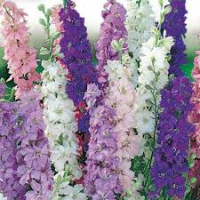

 Le Delphinium est une robuste plante fleurie de jardin qui vous emballera avec ses luxuriantes torches de fleurs qui resplendissent sous le soleil de l’été. Bleu pâle, bleu ciel, lilas, bleu cobalt, le Delphinium, ou pied d’alouette, est surtout connu pour ses nuances de bleu, bien qu’il existe également à fleurs blanches, jaunes, violettes, rouges et roses. Ils poussent comme des plumeaux le long d’une tige qui peut atteindre 2 mètres de hauteur. Cela met de la couleur et de la hauteur là où on ne s’y attend généralement pas. La plante est tendance en ce sens qu’elle est « à cueillir » et on l’associe surtout à l’été de juin à août, sa période de floraison, car elle attire énormément les papillons. Les escargots comptent malheureusement aussi parmi les fans, mais on peut les tenir à l’écart avec des coquillages concassés ou des granulés à escargots.